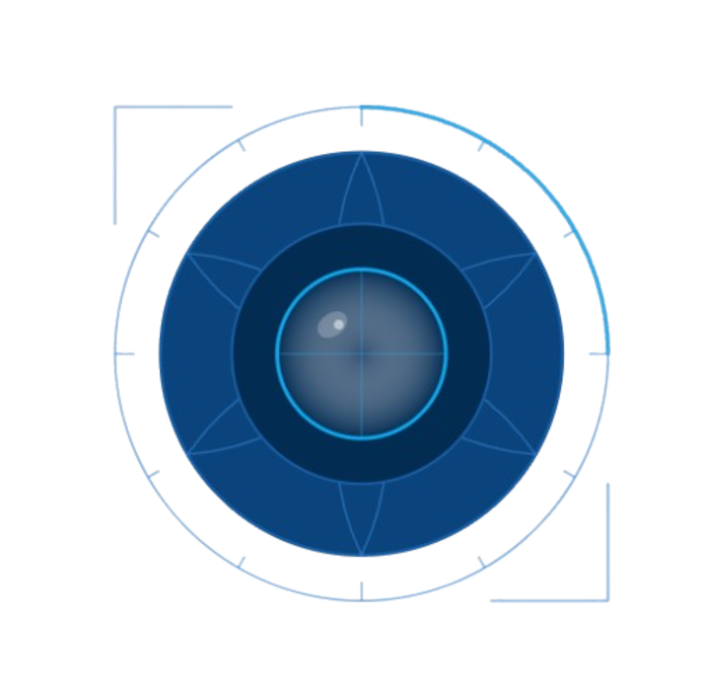

Nyvora Vision LabsFree tools for machine learning, across vision and language: detection pipelines, annotation apps, NLP datasets and dataset schemas. Use them, fork them, and send a PR when something is missing.
Bug fixes, features, docs and datasets are all welcome. Open an issue, send a PR, or come say hi on Discord.